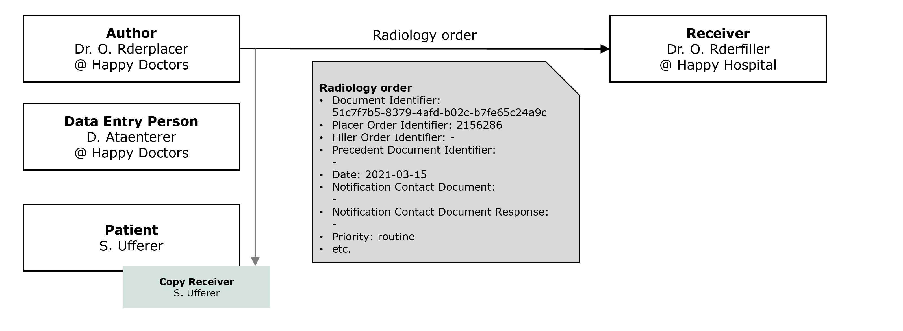
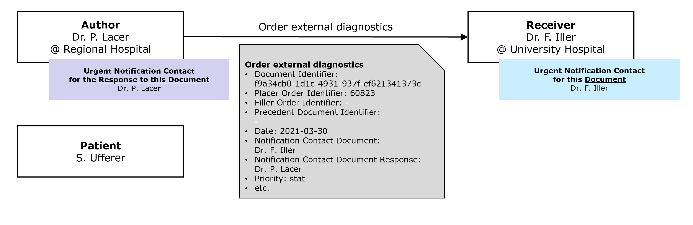

CH ORF (R4)
1.0.0 - STU 1
CH ORF (R4)
1.0.0 - STU 1
This page is part of the CH ORF (R4) (v1.0.0: STU 1) based on FHIR (HL7® FHIR® Standard) R4. The current version which supersedes this version is 3.0.1. For a full list of available versions, see the Directory of published versions
Mrs. S. Ufferer has an appointment with her general practitioner, Dr. O. Rderplacer, at the Happy Doctors group practice on 15 March 2021. The patient complains of recurrent knee pain. Based on the medical anamnesis and the physical examination, the doctor decides to order an X-ray, which is to be performed at the Institute for Radiology of the Happy Hospital by Dr. O. Rderfiller.
The medical practice assistant D. Ataenterer enters the radiology order and sends it to the Institute of Radiology. The order also indicates that the copy of this order shall be sent to the patient (as well as all results therefrom).

Mrs. S. Ufferer feels a stabbing pain in her lower abdomen in the late evening of 30 March 2021. Her general practitioner at the Happy Doctors group practice, who is on emergency duty, refers the patient to the Regional Hospital.
The doctor on duty at the Regional Hospital, Dr. P. Lacer, orders a thorax CT. Based on the thorax CT, he suspects an aortic aneurysm. As there is no radiologist on duty at the Regional Hospital during this night shift, Dr. P. Lacer telephones the radiologist Dr. F. Iller at the University Hospital and sends her the order for the external diagnostics. Because of the suspected diagnosis, time is pressing and the radiologist wants to be contacted urgently after receiving the order with the CT images.
The suspicion of an aortic aneurysm is confirmed and Dr. F. Iller immediately reports this by telephone to Dr. P. Lacer. Mrs. S. Ufferer is therefore moved to the thoracic surgery unit as an emergency and is operated on immediately.

For various reasons, scheduling of the appointment is tricky:
It is not easy to cover all this in a slim application. For this reason, comprehensive scheduling of appointments for referrals is out of scope. It is however possibel to specify date and time with a note of whether it is agreed or proposed. Furthermore it is possible to indicate preferred date/time intervals.
Some service providers offer their services at more than one location; it may also be possible that an assignment/prescription results in more than one consultation (e.g. Holter ECG with appointment for the installation of the device at the beginning and return at the end). ORF therefore provides n appointments per service request.